- Introduction
- Connect Facebook & Instagram
- Import account directly
- Import another account
- Enable bot connection
- Disable bot connection
- Re-start bot connection
- Delete bot connection
- Delete Facebook Page
Facebook & Instagram Accounts
ChatPion is mainly Facebook and Instagram based marketing application. Therefore, after Completing Facebook API Settings Properly, you have to import your Facebook and Instagram accounts to ChatPion. Importing Facebook and Instagram accounts into ChatPion is easy and straightforward. Just follow the instructions, and you can import Facebook and Instagram accounts in no time.
Import Facebook and Instagram accounts
To import Facebook and Instagram accounts, first, go to the dashboard of ChatPion. At the left sidebar of the dashboard, you will see a menu called Facebook and Instagram. Click on the menu.
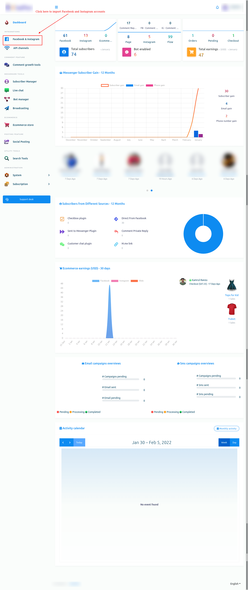Instantly, a page called connect Facebook and Instagram will appear with a button called Login with Facebook.
Not that, to import Facebook and Instagram accounts, Facebook(Logged In) has to be opened on another tab of the same browser.
Well, now click on the Login with Facebook button.
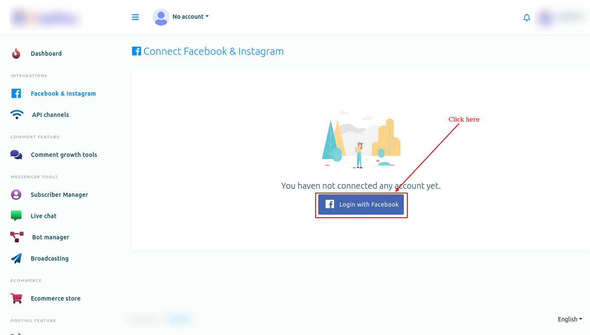Instantly, a modal form will appear on Facebook with three buttons edit settings, continue as your profile name and log into another account.
Click on the edit settings button if you want to edit the settings.
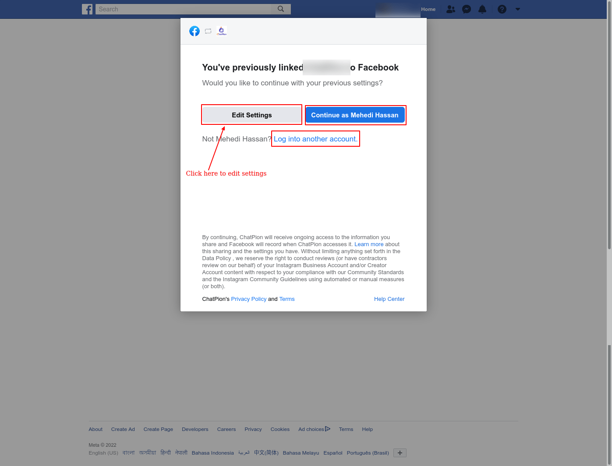Just as you click on the edit settings button, a modal form will appear on the Facebook profile that is opened on another tab of the browser.
On the modal form, you have to select Instagram business accounts you want to use with ChatPion. Of course, you can select multiple or all Instagram business accounts.
Then click on the Next button.
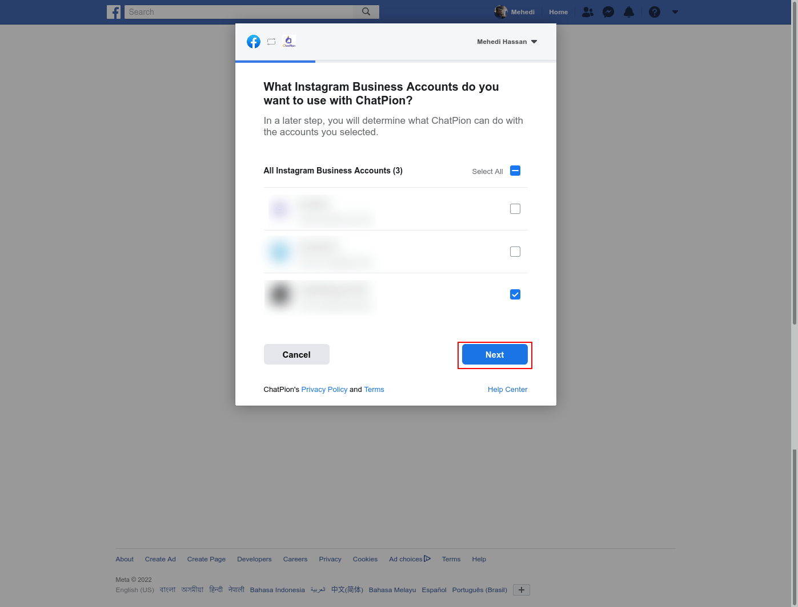Instantly, another modal form will appear on the Facebook profile. On the modal form, you have to select the Facebook pages you want to use with ChatPion. Of course, you can select multiple or all Facebook pages.
Then, click on the Next button.
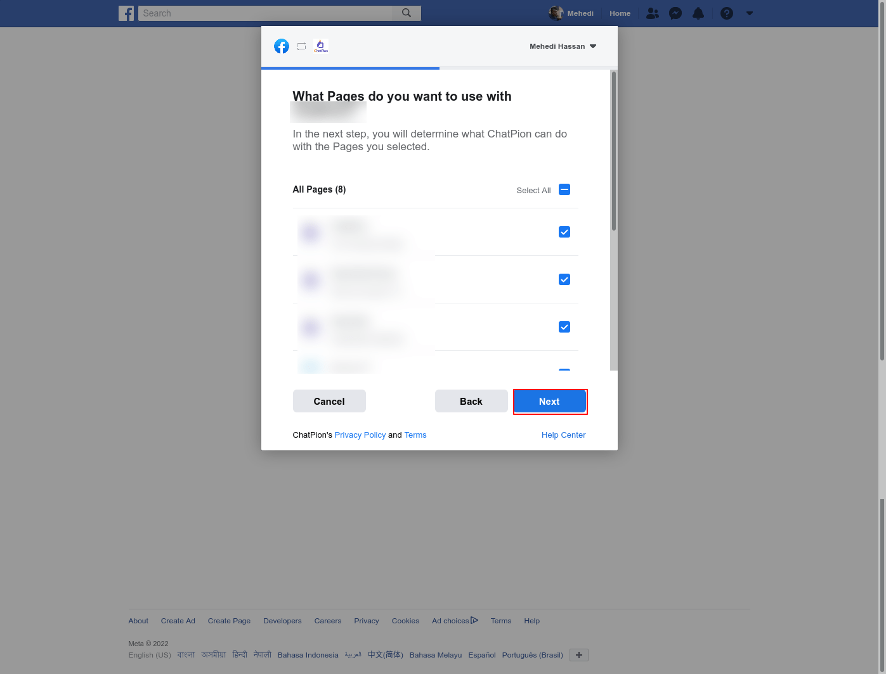Instantly, a modal form will appear. On the modal form, you have to select what ChatPion is allowed to do. Keep every option turned on.
Then click on the Done button.
Instantly, another modal form will appear with a message that now you have linked ChatPion to Facebook and the Ok button.
Now click on the OK button.
Instantly, a modal form will appear. On the modal form, you have to select what ChatPion is allowed to do. Keep every option turned on.
Then click on the Done button.
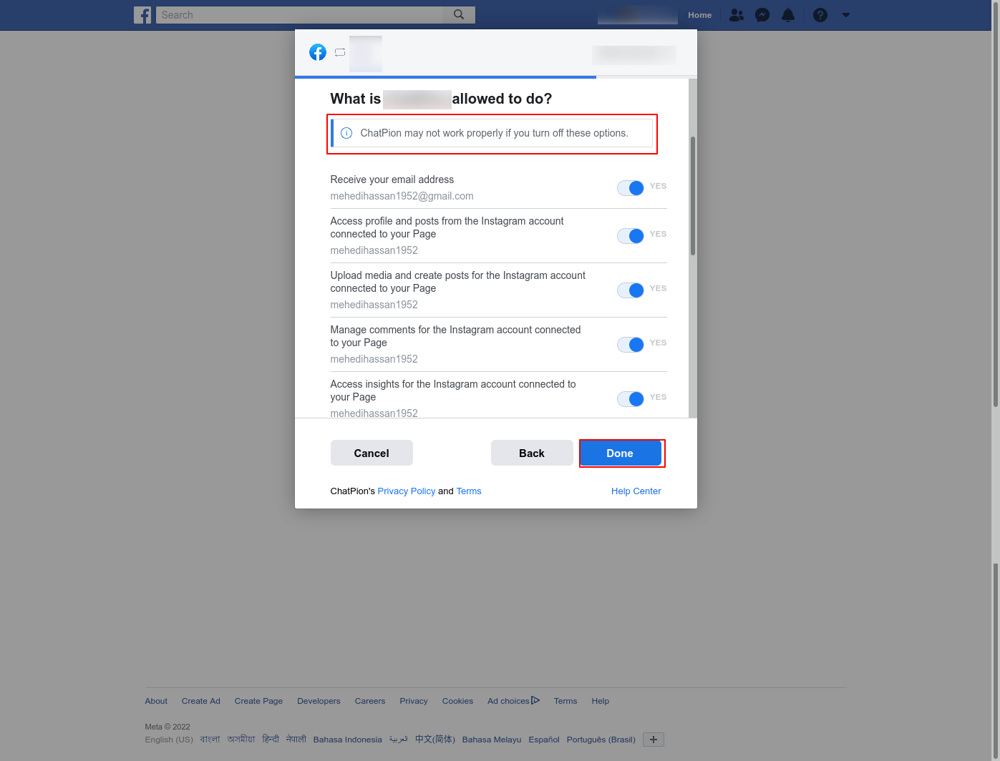Instantly, another modal form will appear with a message that now you have linked ChatPion to Facebook and the Ok button.
Now click on the OK button.
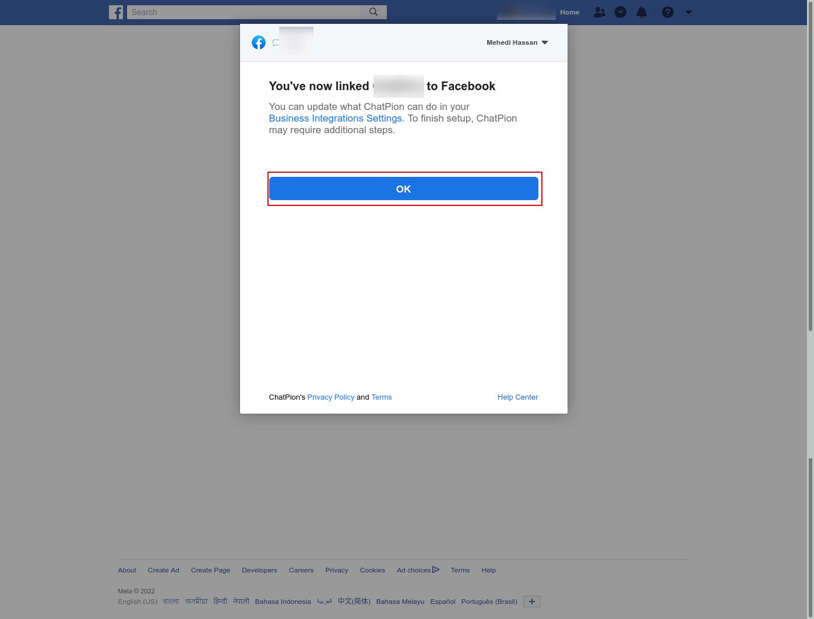Import account directly
By clicking on the Continue as Profile name, you can import Facebook accounts directly.
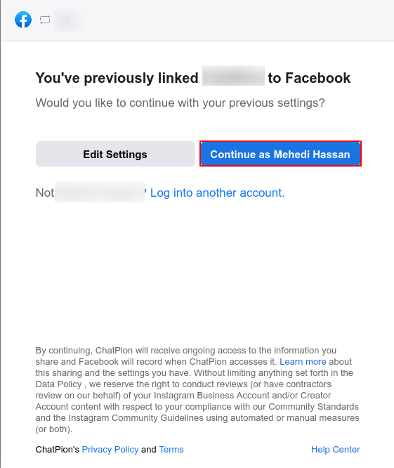Import another account
You can also import another account by clicking on the log-in into another account button.
Click on the Log in into another account button and the Facebook login page will appear.
Now Log in with the Facebook and the account will be imported into ChatPion.
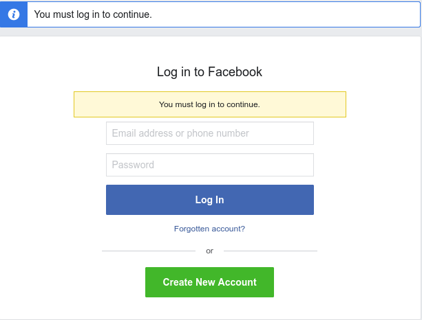Instantly, the Connect Facebook and Instagram page will appear with a successful message and Facebook profile and Facebook page. Under the Facebook pages, you will see two buttons — the plug button and the delete button.
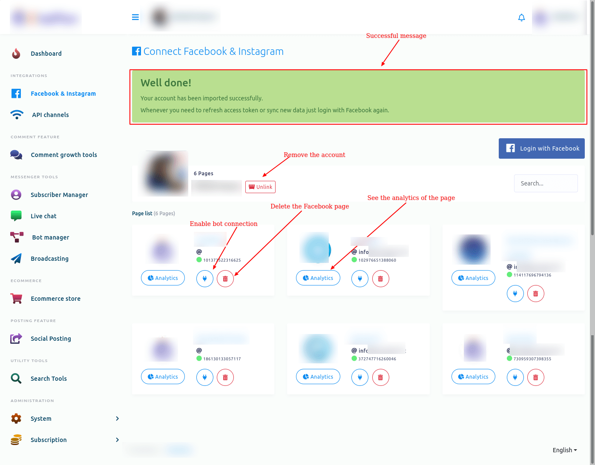Enable bot connection
Now you have to enable bot connection for the pages. To enable bot connection for a page, click on the plug button under the page.
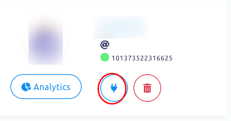Instantly, a modal will appear with Cancel and OK button. Click on the OK button.
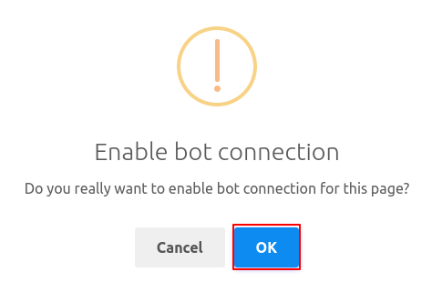And a successful message — Bot connection has been enabled successfully — will appear.

Instead of the plug button, you will see two more buttons — the Eraser button and the Power button.
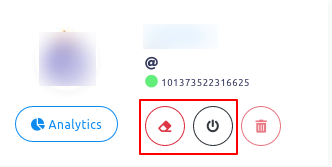Disable bot connection
By clicking on the power button, you can disable the bot connection. Just as you click on the power button, a modal will appear with Cancel and OK buttons. Click on the OK button and the bot will be disabled.
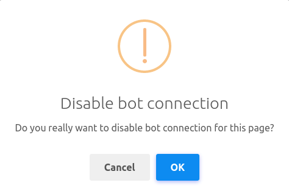And Instead of the power button, a radio button will appear.
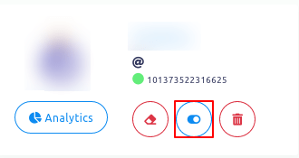Re-start bot connection
To re-start the bot connection, click on the radio button. Instantly, a modal will appear with Cancel and OK buttons. Click on the OK button and the bot will be restarted.
And instead of the radio button, the power button will appear.
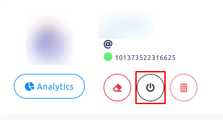Delete bot connection
To delete the bot connection and all settings, click on the Erase button. And a successful message will appear.
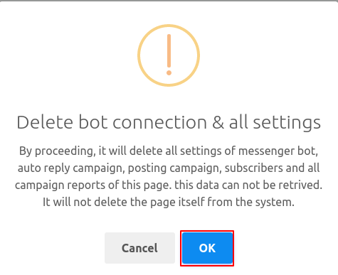Then, instead of the Erase and Power button, the plug button will re-appear.
Delete Facebook page
You can also remove the Facebook account. To remove the Facebook account, click on the Unlink button. Instantly, a modal will appear with Cancel and OK button.
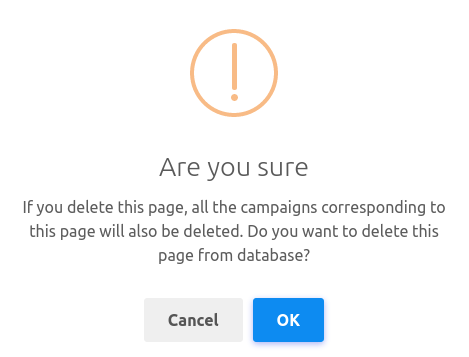Click on the OK button and a successful message will appear. And the Facebook Page will be deleted.
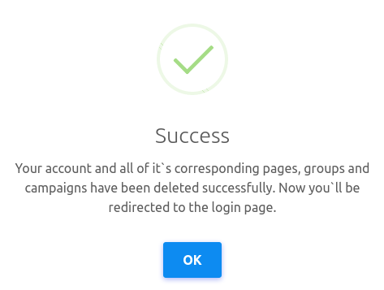See analytics
You can see the analytics of the page. To see the analytics of a page, click on the analytics button.
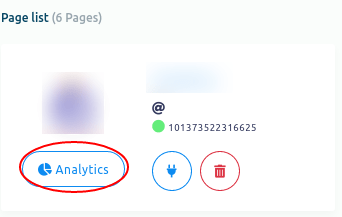Instantly, a page called bot analytics will appear. You can see the bot analytics of the Facebook page on the web page.
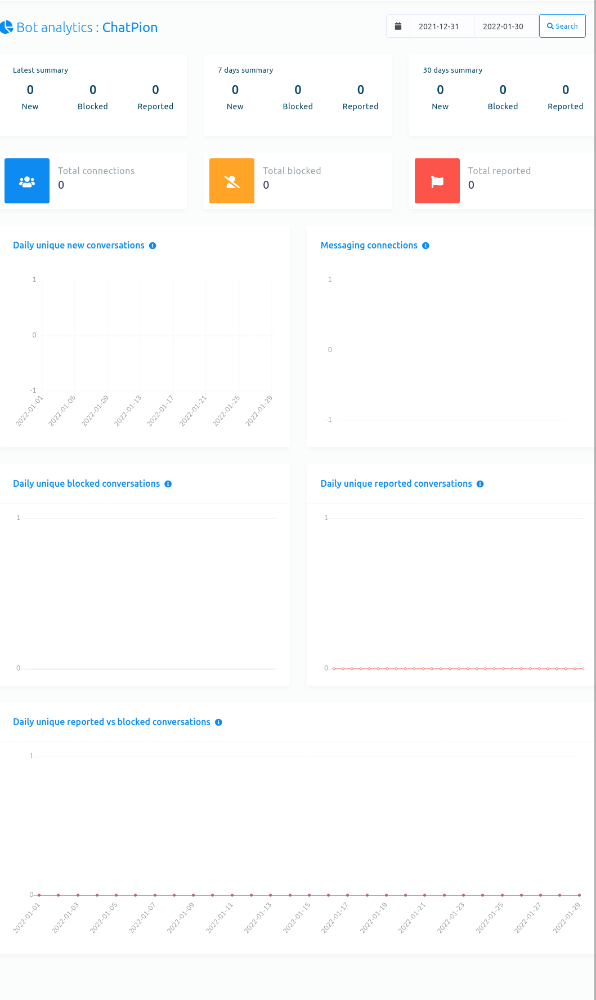